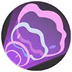

| Attaque | Icône | Description |
|---|---|---|
| Attaque de base |  |
Evoli : La troisième attaque de base est renforcée, infligeant des dégâts supplémentaires.
Nymphali : La troisième attaque de base est renforcée, infligeant des dégâts supplémentaires et augmentant la vitesse de déplacement du lanceur. |
| Talent | Icône | Description |
|---|---|---|
| Adaptabilité / Peau Féérique | Evoli commence la partie avec le talent Adaptabilité: À chaque fois que le Pokémon inflige ou subit des dégâts, son Attaque Spéciale augmente pour une courte durée. Lorsqu’il évolue en Nymphali, son talent devient Peau Féérique: À chaque fois que le Pokémon inflige ou subit des dégâts, son Attaque Spéciale et sa Défense Spéciale augmentent pour une courte durée. |
| Attaque spéciale 1 | ||
|---|---|---|
| Attaque | Icône | Description |
| Météores | Projette 4 étoiles qui infligent des dégâts aux Pokémon ennemis. | |
| Attaque | Icône | Description |
|---|---|---|
| Niveau 4: Mégaphone Amélioration au niveau 10 |
 | Déchaîne plusieurs vagues sonores en cône. Les dégâts infligés augmentent avec la distance parcourue par les ondes. À chaque fois qu’une onde touche, la suivante inflige des dégâts supplémentaires. |
| Attaque | Icône | Description |
|---|---|---|
| Niveau 4: Feu Ensorcelé Amélioration au niveau 10 |
Le lanceur bondit dans la direction ciblée et s’entoure de 4 petites flammes. Ces dernières vont ensuite s’écraser une à une sur les ennemis proches, infligeant des dégâts et baissant leur Attaque Spéciale. Chaque flamme qui touche un ennemi réduit le délai de récupération de cette capacité. |
| Attaque spéciale 2 | ||
|---|---|---|
| Attaque | Icône | Description |
| Regard Touchant |  |
Tire un projectile qui inflige des dégâts et réduit l’attaque et la vitesse de déplacement des ennemis touchés. |
| Attaque | Icône | Description |
|---|---|---|
| Niveau 6: Vampibaiser Amélioration au niveau 12 |
Envoie un bisou sur un Pokémon ennemi. Le bisou inflige des dégâts et ralentit la cible puis revient vers le lanceur pour le soigner, faisant ainsi jusqu’à 3 allers-retours. L’effet du sort prend immédiatement fin si le lanceur et la cible s’éloignent trop l’un de l’autre. |
| Attaque | Icône | Description |
|---|---|---|
| Niveau 6: Plénitude Amélioration au niveau 12 |
Augmente l’Attaque Spéciale, la Défense Spéciale et la Vitesse de déplacement du lanceur. |
| Capacité Unite | ||
|---|---|---|
| Attaque | Icône | Description |
| Don Féerique Débloquage au niveau 9 |
 |
Le lanceur bondit dans les airs, devenant brièvement invincible. En retombant, il inflige des dégâts autour de lui et récupère des PV. Pendant 9 secondes, il récupère sous forme de PV une partie des dégâts qu’il inflige. |